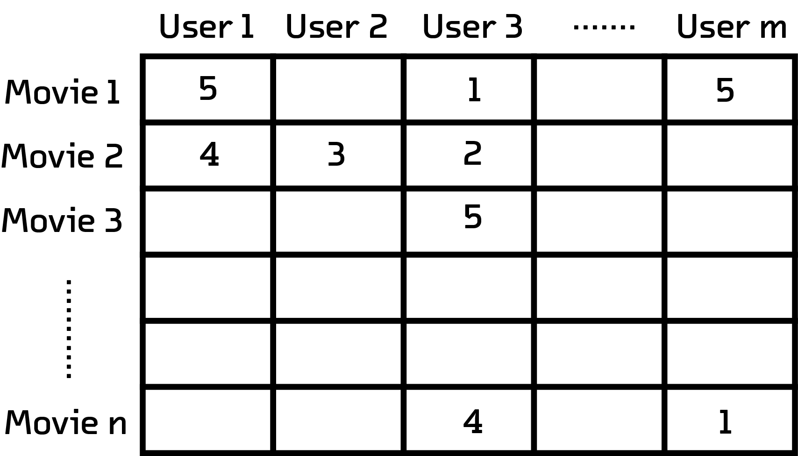

Introduction
Social networks like Facebook and Twitter are created with communities in mind.
But there are also passive, implict communities that are defined by their
members’ interactions with the service (such as Netflix and Spotify).
Defining such relationships and analysing the communities the connections
imply allows us to learn about both the community and the subject. For
instance, users of a music streaming service can be grouped together based on
the kind of music they like. These groups could be used to investigate shifting
trends, and the emergence and decline of subcultures.
These insights are not only culturally significant, but also valuable from a
business perspective. Streaming services spend millions of dollars each year to
acquire content. Can we build tools that help them to study their userbase and
optimize their catalogue?
In this post we are going to look at an interactive visualization that clusters
movies together based on user ratings. This visualization will give us a
glimpse into a community of cinephiles.
The Dataset
MUBI is an online service that integrates a subscription video-on-demand service with a massive database. The service has a truly diverse selection of content from underground cult classics to Tarantino blockbusters that attracts cinephiles from all over the world. Its 8 million users have collectively rated and reviewed thousands of movies present in its database.
Given this dataset, how can we visualize the relationship between these users and
the movies that they have rated? Let's take a look at a technique called t-SNE
that can help us solve this problem.
Introduction to t-SNEs
An example of a dimensionality reduction operation
(Source)
Data visualization designers use a number of techniques and tricks to show the
relationship between items in a dataset. Of course the location in the 2D
visualization is an option, but scalar values such as rating or count can be
shown by the size of the point, and categorical variables can be shown using
colored labels.
| Type of Fruit |
Weight |
Cost |
Sugar per cup |
| Watermelon |
280 |
13.50 |
18 |
| Strawberry |
7 |
2 |
7 |
| Strawberry |
5 |
1 |
7 |
| Orange |
131 |
2 |
23 |
This visualization shows a dataset with four dimensions. Each of these
dimensions is visualized in a different way, using size, symbols and location.
What if we have a dataset with thousands of dimensions? The designer would
start run out of ways to visualize dimensions and the resulting
visualization would probably be incomprehensible to the user.
This is where t-SNE can help us. t-SNE (t-distributed stochastic neighbor
embedding) is a machine learning algorithm developed by Geoffrey Hinton and
Laurens van der Maaten which reduces the dimensionality of a dataset. It is
good at reducing very high dimensional data to two or three, which
makes it much easier to visualize using simple techniques such as scatterplots.
Dimensionality reduction is an old technique. Principal component analysis, for
example, has been used to attack this problem since 1901. But t-SNE does
something that may other schemes do not: it maintains as much global and local
structure as it can. This is done by explicitly trying to maintain the distance
between points from before and after the algorithm has been applied. Its
reduction is therefore ideal for both clustering and visualization.
Process

A matrix with m number of columns and n number of rows.
Notice that not all users rate every movie
We selected a subset of MUBI users who had rated at least 20 movies. An
adjacency matrix can be constructed for this subset of users, where each column is
a user and each row is a user’s rating for a particular movie.
This multidimensional matrix will be t-SNE’s input. t-SNE will reduce the
number of dimensions to just two, which we can use as coordinates for an
interactive scatterplot.
The Visualization
Each movie in the visualization is represented as square. The color of the
square represents the movie's genre. The position of each square is determined
by the t-SNE algorithm which only takes movie ratings by users as an input; the
algorithm is agnostic to the metadata of the movie itself such as genre,
director and year of release.
Guided Tour
Let's take a tour through some interesting features in our visualization.
Scroll along to trigger zoom interactions that will lead you to interesting
parts of the visualization!
There are some genres in the visualization that show strong clustering.
Clusters of movies of the same genre or same country of origin indicate a
subset of users affinity towards that particular type of movie.
Since this is a dataset of cinephiles from all over the world, it's not
surprising that we see clusters of movies from different countries. You can see
many such clusters from countries with strong cinematic traditions such as
Italy, Iran, India, Turkey and Japan.
Sometimes clusters form around cinematic time periods, such as a cluster of
short black-and-white movies from the early 20th century.
As we go from the left to the right the number of reviews of a movie increases.
As a result popular movies stand out by themselves, far away from the crowd.
Similarly filmographies of popular directors such as Tarantino or Kubrick,
denoted by a web of lines in the visualization, tend to be found on the right
side of the visualization.
Sandbox
Time to get your hands dirty in the sandbox! You can zoom into the visualization
to get a more granular view of the clusters. You can also play around with different
settings to turn different genres on/off or search for your favorite movie. You can now
also click on a movie to view more information about it and see more movies by the same
director (depicted by lines).